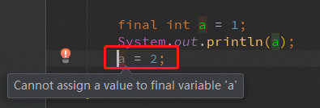
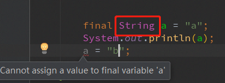
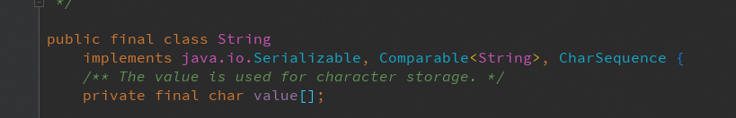
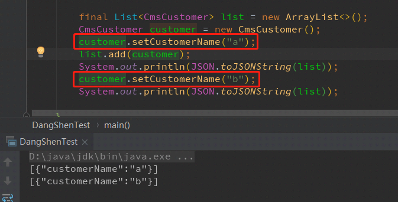
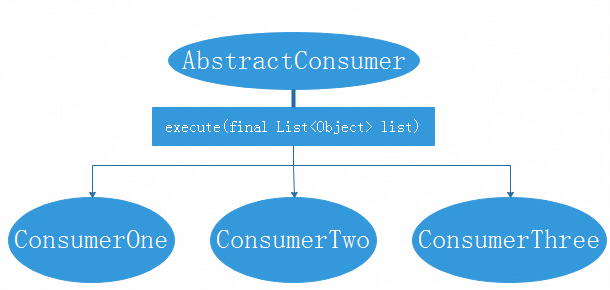
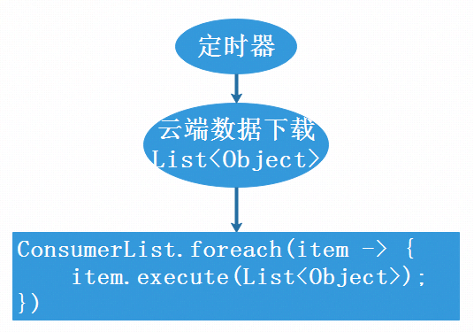

final关键字，是在java程序开发中经常性使用的，大部分情况下，final被用来定义不可集成的类、不可修改的变量、不可重写覆盖方法。下面来谈谈final的一些相关知识以及它所可能带来的坑。。。
final可修饰范围
java中，final关键字可以修饰类、方法、变量。分别说明一下三种情况：
- final修饰类
final修饰的类，是不允许被继承的。因此，类中的方法也不允许被覆盖。因此需要将类定义为不可继承的时候，可以将其用final修饰。(日常开发中较少出现将类定义为final的情况) - final修饰方法
一般final方法出现的情况是，为了锁定方法，防止被继承类重写覆盖方法，这样可以保证此类及其子类的此方法都由父类实现。 - final修饰变量
final修饰变量是最常见的情况，当一个变量被定义为final的时候，如果变量是基本数据类型，则起数值一旦被赋值，则无法再修改。如果变量是引用类型，则初始化之后，其指向的内存对象则不会改变。
final变量注意点
前面有说到，java中final修饰的变量，是区分两种类型情况的。如果是int、long等等基本类型，那么变量的值是赋值之后无法改变，这个是比较简单明了的点。如下图所示：

此外，String这种被定义为final类型的变量，也是不可修改值的：

从String的源码实现可以看到，它是被定义为final类的：
但是关于另一种情况，当修饰的是变量对象的时候，不可变的只是变量所指向的内存地址，但是对象的属性字段等值是可以被修改的，如下所示：

可以看到，list没有改变，但是list内部的某个元素的属性被修改了，list依旧指向那个元素的地址，导致最终从list里面取出来的元素的属性也是被修改的。这是一个需要注意的点，否则容易在日常开发中产生bug，并且这种bug往往是比较难以追查的。
final踩坑案例
之所以会分享final修饰符，是因为在工作中因为final产生了一个bug，追查了大半天才发现了问题所在。
问题背景
业务是通过消费者模式，对一些数据进行查询，让不同的消费进行各自的业务。所以有一个消费者抽象类：public abstract class AbstractConsumer {}
抽象类提供抽象的执行方法execute()：public abstract void execute(final List<Object> datas);
然后，定义了多个消费者类，继承于这个抽象类，实现其execute()方法，这样就可以做到不同消费者从同个入口进入，实现不同的逻辑业务。
抽象类的执行，是用定时器的方式，load出要处理的数据，然后提交这份数据给不同的抽象子类去处理。消费者模型大致如下：

问题出现
在实际的生产业务中，发现某个消费者的业务出现了问题，数据的处理并非想象的结果，于是，开始进行问题排查。
首先，模拟了此消费者的执行，传入理想参数，发现最终执行结果是没有错误的，于是往外层排查，也就是调用消费者的入口，定时器。定时器的执行机制大致如下：

定时器会从云端下载文件数据，然后将数据遍历地传送给不同消费者。所以下个排查点定位在数据下载。找出云端相应文件数据，然后打印下载后的数据，两份数据作对比，发现数据是完全一致，所以排除数据下载问题。
此时，陷入困惑，无奈只能将云端下载的数据，传入指定的消费者，看看消费者业务处理是否有误。结果发现，消费者的处理结果是完全正确的。
只能细看代码，发现问题所在，在仔细查阅定时器的执行逻辑之后。发现了端倪，定时器的逻辑是遍历每个消费者，然后使用的是同一份数据，是否在某次消费者的消费过程中，将数据进行了改变，导致后面的消费者使用的都是错误数据。在每个消费者里面，都在消费前后打印数据源。结果显示，确实在某个消费者执行前后，数据源发生了改变，导致后续消费者使用的都是错误的数据源。
到此，问题定位到了，查看execute方法的定义，接收参数List
问题解决
public abstract void execute(final String dataJsonString);
可以将入参变为不可变参数String类型，然后将数据转为JSON字符串传入，各个消费者再去转换成要的List- 在调用execute方法之前，将List